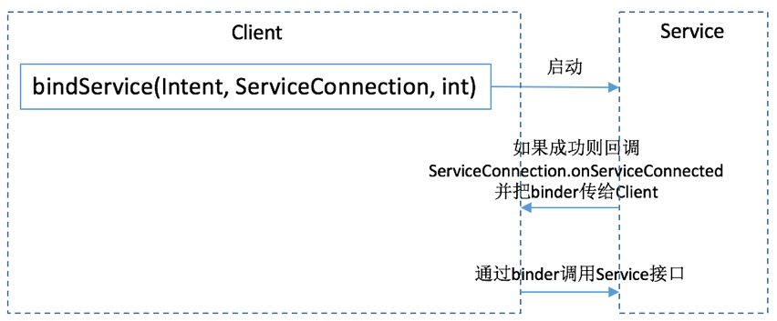

Binder学习笔记（一）引子
网上看了很多关于binder的文章，但我还是想把自己的心路历程记录下来，有些是跟着别人的脚步领略险峻风景，有些则是自己只身探入代码深处打捞出的收获。我不确定是否全部融会贯通，更担心一两个月后会完全不记得来时的路。最好的验证和留存的方法是把他们写成博文，几个月后回头再来读，看是否还能读得明白。如果可以，说明我两个担心已不复存在；如果又回到云里雾里，刚好可以带着新问题继续探索。文章很多地方会引用Android源码，我的源码版本是6.0.1_r11。
当静态代码走查遭遇多态、依赖外部数据时，常常会陷入困境，眼前多个岔路口，不知该走哪条路。我就顺道把gdb也重新捡起来，动态调一把就知道正确答案了。我尽量详细地记录下使用步骤，以便未来可以很方便地重新走入这条路。
我觉得读代码也应该是“不求甚解”的，不要一竿子插到底，先在一个层面上把问题分析清楚，再逐步深入到下一个层面，逐层攻破。其实跟写代码很像，解决复杂问题的两大利器——分层、分模块。当然最终是要达到山高月小，水落石出的境界。文章会一点一点放出，发出的文章可能还会不断回过头来再修改，希望最终能够打磨出一篇精致小品，以后就再也不用追究Binder了。
##binder的使用（Java代码）
Binder是Android系统为进程间通信提供的一种方式，在创建Service的时候会经常用到。创建Service的基本步骤如下：1
2
3
4final Intent intent = new Intent(this, BindMyService.class);
private MyServiceConnection conn = new MyServiceConnection();
……
bindService(intent, connection, Service.BIND_AUTO_CREATE); // 创建Service
当Service创建成功，Service会回调ServiceConnection的函数：public void onServiceConnected(ComponentName name, IBinder service);

更神奇的是，Service和Client可以是两个不同的进程，而且即使跨进程，Client仍然可以把来自Service的binder当做本地对象来使用。Binder对函数调用做了封装，把函数和参数组装成数据包发给Service，再由Service调用和执行实际的服务接口，并把执行结果也组装成数据包返回给客户端。
Java层的代码会向下进入native层，通过该层的c++代码调用frameworks以及更底层的驱动来完成消息的流转。为了尽快触摸到Binder的本质，我们现在就潜入到native层，用c++代码完成Service的编写和Client端的调用，并以此为起点进入到Binder的实现层。至于从Java到native的桥接，可以留待本质问题水落石出之后再去探究，那只是末枝上的小细节了。
我把测试代码放在这里：palanceli/androidex/external-testservice
可以下载完整的项目：palanceli/androidex，把它放到和android-6.0.1_r11平行的目录下，执行：1
2$ cd androidex
$ sh setup.sh
即可创建软链android-6.0.1_r11/external/testservice指向androidex/external-testservice
我这么做是希望归拢自己的代码，每次不必深入到Android源码内去修改自己的代码，同时又可以在编译Android源码的时候又能把自己的代码编译进去。
代码不在此罗列，它包含了binder的Server端和Client端。
执行如下命令，完成编译：
1 | $ cd android-6.0.1_r11 |
我把Android源码的build/envsetup.sh内的TARGET_BUILD_TYPE默认值全改成了debug，这样确保执行以上mmm命令的时候，总会生成debug版。
编译完成后，执行如下命令：1
2
3
4
5
6$ adb shell mkdir /data/local/tmp/testservice # 把生成的两个可执行程序拷贝到模拟器
$ adb push out/debug/target/product/generic/obj/EXECUTABLES/TestServer_intermediates/LINKED/TestServer /data/local/tmp/testservice
$ adb push out/debug/target/product/generic/obj/EXECUTABLES/TestClient_intermediates/LINKED/TestClient /data/local/tmp/testservice # 添加可执行权限
$ adb shell chmod 755 /data/local/tmp/testservice/ # 启动服务端
$ adb shell /data/local/tmp/testservice/TestServerBnTestService::onTransact, code: TESTBnTestService::test()# 在另一个终端下客户端：
$ adb shell /data/local/tmp/testservice/TestClientBpTestService::test()reply 100
OK，前期准备就这么些，接下来就可以测试代码为入口深入到binder的内部实现了。